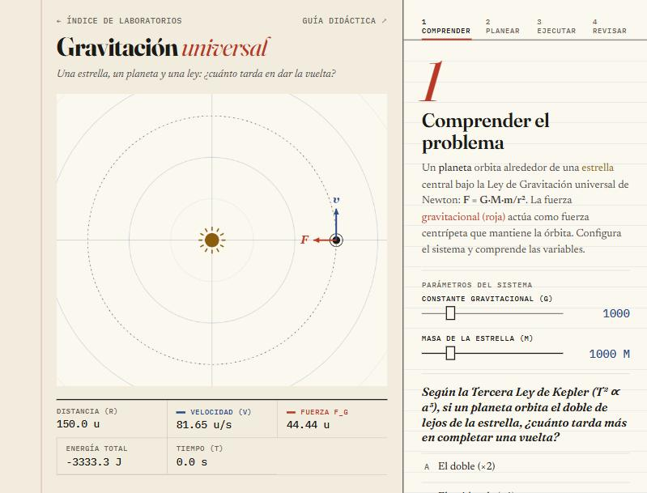
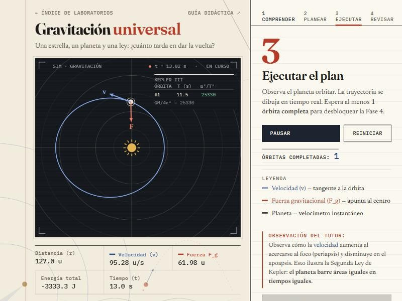
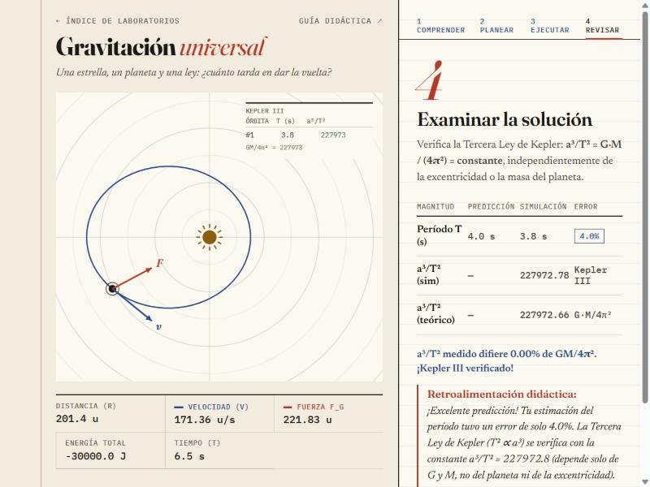

Gravitación universal
Guía didáctica del estudiante · método de Pólya · Física — UNIR
Una estrella, un planeta y una ley: ¿cuánto tarda en dar la vuelta? Con esta guía vas a medir órbitas circulares y elípticas y a comprobar que la tercera ley de Kepler sale de la simulación.
Gravitación universal y leyes de Kepler
La ley de gravitación de Newton dice que dos masas se atraen con una fuerza proporcional al producto de sus masas e inversamente proporcional al cuadrado de la distancia que las separa.
Las tres leyes de Kepler
- 1.ª ley (elipses): los planetas orbitan en elipses con la estrella en uno de los focos.
- 2.ª ley (áreas): el radio vector barre áreas iguales en tiempos iguales; equivale a la conservación del momento angular, así que el planeta va más rápido cerca de la estrella.
- 3.ª ley (períodos): T² ∝ a³, con a el semieje mayor. La constante depende solo de G y M.
T = 2π·√( a³ / (G·M) )
Con a el semieje mayor, G la constante gravitacional y M la masa central. Fíjate en que T no depende de la excentricidad: dos órbitas con el mismo a tienen el mismo período, aunque una sea casi circular y la otra muy alargada.
Comprender el problema
Identifica las variables del sistema antes de simular: la constante G y la masa M de la estrella fijan cuánta atracción hay.

En tu cuaderno · variables
| Variable | Símbolo | Unidad | Tu valor |
|---|---|---|---|
| Constante gravitacional | G | u (escalada) | |
| Masa de la estrella | M | u (escalada) | |
| Producto G × M | G·M | u |
Si duplicas M sin cambiar la órbita, ¿qué le pasa a la velocidad orbital circular? ¿Y al período? Razónalo antes de probarlo con los sliders.
Concebir un plan
Fija la órbita con el semieje mayor a y la excentricidad e. El planeta parte siempre del periapsis, el punto más cercano, con la velocidad que da la ecuación de vis-viva. Calcula el período con Kepler III:
vperiapsis = √( G·M/a · (1 + e)/(1 − e) )
T = 2π·√( a³ / (G·M) )
En tu cuaderno · predicción
| Paso | Fórmula | Tu cálculo |
|---|---|---|
| Semieje mayor a | a | u |
| Periapsis y apoapsis | a(1 − e), a(1 + e) | u |
| Período orbital | T = 2π·√(a³/G·M) | s |
Si introduces e = 0.5, ¿cambia el período? Piensa qué significa a: el semieje mayor, no el radio inicial. Verifica tu respuesta con el simulador.
Ejecutar el plan
Inicia la simulación y registra la telemetría en distintos puntos para verificar la segunda ley: el planeta va más rápido en el periapsis y más lento en el apoapsis.

En tu cuaderno · puntos de la órbita
| Posición | r (distancia) | v (velocidad) | Fg |
|---|---|---|---|
| Periapsis (más cercano) | |||
| Apoapsis (más lejano) | |||
| ¿Es r·v constante? |
¿Aumenta o disminuye la velocidad cuando el planeta se acerca a la estrella? Comprueba que el producto r·v es igual en periapsis y apoapsis: confirma la conservación de L = m·r·v.
Examinar la solución
La Fase 4 se desbloquea al completar una órbita. El simulador mide el semieje mayor y el período de cada vuelta y los compara con la constante teórica G·M/4π².

En tu cuaderno · órbitas medidas
| Órbita | Semieje a | Período T | T² (s²) | a³/T² |
|---|---|---|---|---|
| 1 | ||||
| 2 | ||||
| 3 |
Conclusiones esperadas
- La constante a³/T² es la misma para todas las órbitas del sistema: depende de G·M, no de e ni de la masa del planeta.
- Al doble de semieje, el período es 2√2 ≈ 2.83 veces mayor (T ∝ a3/2).
- La velocidad es máxima en el periapsis y mínima en el apoapsis (segunda ley de Kepler).
- La energía total K + U es constante durante toda la órbita: el sistema es conservativo.
Si G·M = 10⁶ u³/s², calcula el período de un planeta con a = 100 u. ¿Cómo cambia si duplicas solo G? ¿Y si duplicas solo M? ¿Importa la masa del planeta?